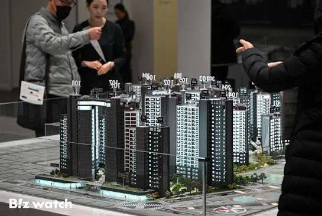

코딩하는기술사 · 2026. 08. 22
코드, 테스트, 문서, 리팩터링 — AI가 더 빠르고, 때로는 더 깔끔하게 만듭니다.

🖼️ images/model_house.jpg견본, 임시
수도, 전기, 단열, 소방, 하중…
"AI가 코드를 짜면
위험하다"
"누가 품질의 경계와 기준을 정하고,
누가 그것을 검증했는가"
그리고 — 누가 책임지는가
정답이 있다 → AI에게 물으면 된다
맥락 · 제약 · 트레이드오프 —
판단 · 결정 · 책임
"소프트웨어 아키텍처란 구글에서 검색할 수 없는 것들이다" — Mark Richards
아키텍트 하면 가장 먼저 떠오르는 단어 — 설계.
사람이 읽던 설명서가 —
AI가 읽고 행동하는 실행 조건으로
특정 언어와 프레임워크를 깊이 있게 학습하고,
해당 언어와 플랫폼의 전문가가 된다. — 여기까지.
🍡 대왕 카스테라 · 흑당 버블티 · 탕후루 · 두바이 쫀득 쿠키 — ???
작은 것이라도 좋으니 — 처음부터 끝까지, 직접 주도해서 만들어보십시오.
코딩 · DB 설계 · 버그 수정 · 배포 설정까지
기술적 깊이와 너비
— Mark Richards · Neal Ford, 『소프트웨어 아키텍처 101』
AI가 몇 배로 빠르게,
얼마든지 찍어냅니다
흔해지는 것
검토할 코드, 운영할 시스템,
결정할 사안이 함께 늘어납니다
귀해지는 것
AI에게 코드는 맡기되, 판단까지 맡기지는 마십시오.